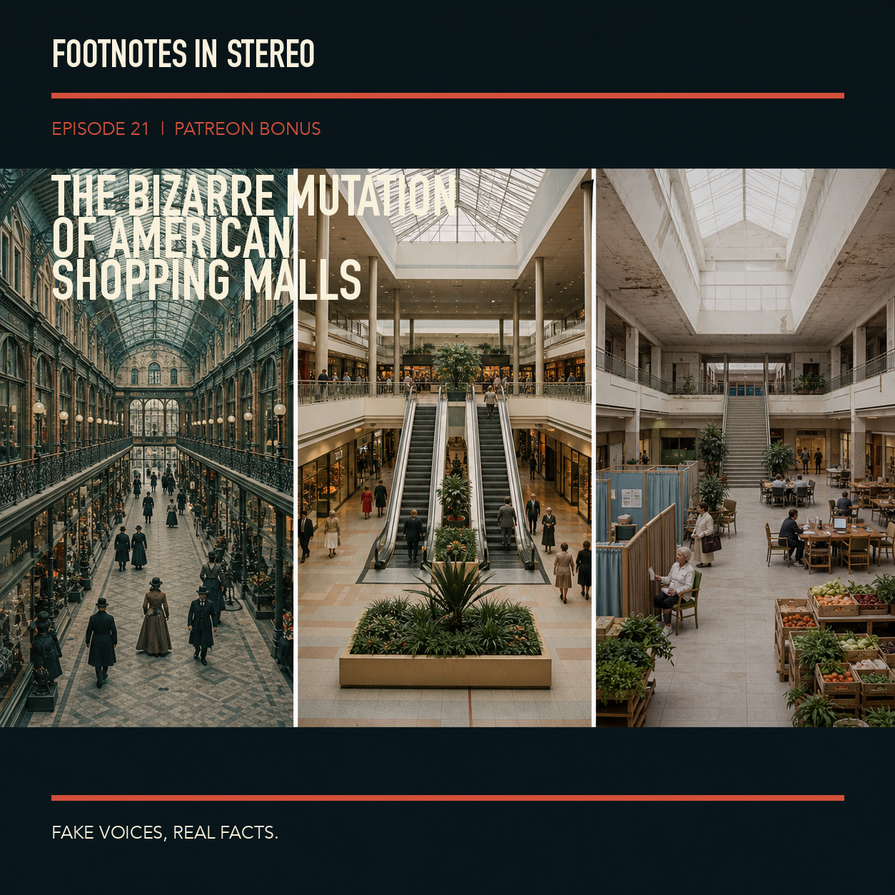

The Bizarre Mutation of American Shopping Malls
Mira Vale and Theo Arlen trace the shopping mall from the iron-and-glass arcades of the nineteenth century to Victor Gruen's climate-controlled suburban ideal, then through the retail consolidation, e-commerce boom, and redevelopment experiments that followed. The mall was never only a collection of stores: it was architecture designed to turn shopping into spectacle, social life, and a substitute town square. The episode follows Southdale Center's influential design, the economics that made enclosed malls proliferate, and the pressures that left many of them vacant or radically repurposed. It also looks beyond the familiar "dead mall" story to the afterlives of these buildings as housing, clinics, libraries, offices, markets, and other community spaces. Created with Gemini Notebook. The conversation and voices in this episode were generated with Gemini Notebook. Fake voices, real facts.
Sources
- 5th Street Arcades: Cleveland's Four-Season Shopping Streets - Cleveland Historical
- E-Commerce Retail Sales as a Percent of Total Sales - Federal Reserve Bank of St. Louis
- Quarterly Retail E-Commerce Sales Report - U.S. Census Bureau
- Opening of Minnesota's Southdale Center - Library of Congress
- Southdale Center: The First Indoor Shopping Mall - Minnesota Historical Society
- Southdale Center - Gruen Associates
- The Economic History of the Shopping Mall — and Its Future (Yes, It Does Have One) - Richmond Fed
- The Great American Shopping Mall: Past, Present, and Future - Cornell Journal of Law and Public Policy
- The Transformation of the American Shopping Mall - Smithsonian Magazine
- What did the shopping mall look like in 1956? - PBS News
- 5th Street Arcades: Cleveland's Four-Season Shopping Streets - Cleveland Historical
- E-Commerce Retail Sales as a Percent of Total Sales - Federal Reserve Bank of St. Louis
- Quarterly Retail E-Commerce Sales Report - U.S. Census Bureau
- Opening of Minnesota's Southdale Center - Library of Congress
- Southdale Center: The First Indoor Shopping Mall - Minnesota Historical Society
- The Great American Shopping Mall: Past, Present, and Future - Cornell Journal of Law and Public Policy
- The Transformation of the American Shopping Mall - Smithsonian Magazine
Transcript
Machine transcript; lightly formatted and subject to correction.